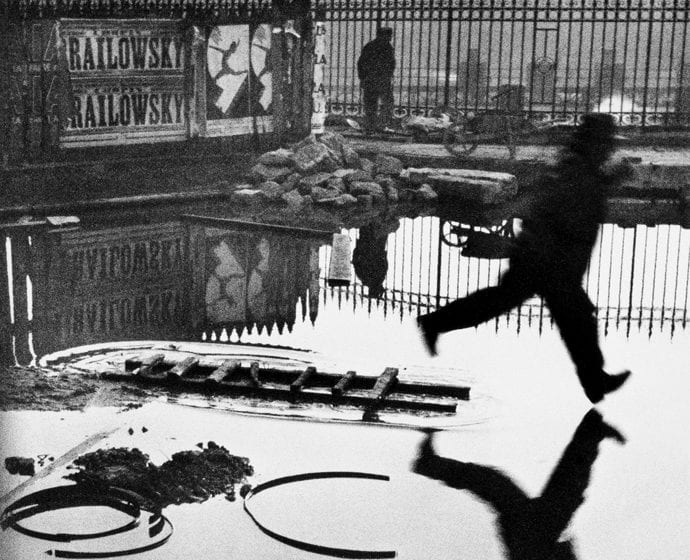

돌아가기
The Decisive Moment
"결정적 순간"의 창시자로 알려진 Cartier-Bresson은 순간을 포착하는 능력이 뛰어난 사진가입니다. 그의 사진은 일상적인 장면을 통해 인간의 감정과 순간의 본질을 드러냅니다.
"결정적 순간"의 창시자로 알려진 Cartier-Bresson은 순간을 포착하는 능력이 뛰어난 사진가입니다. 그의 사진은 일상적인 장면을 통해 인간의 감정과 순간의 본질을 드러냅니다.